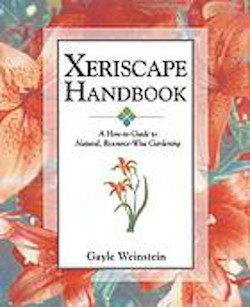
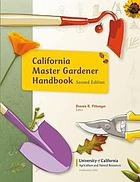
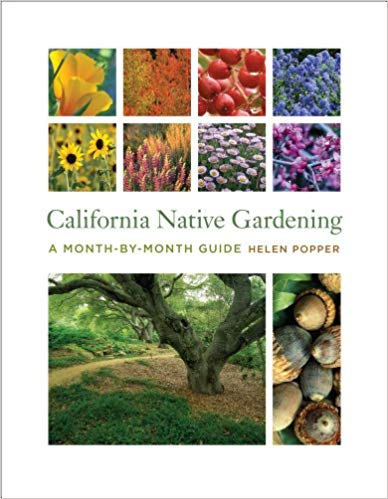

| Books on Xeriscaping | ||||||
|---|---|---|---|---|---|---|
| Title | Author | Publisher | Edition/Format | Summary | WorldCat Link | |
|  | Xeriscape handbook : a how-to guide to natural, resource-wise gardening | Gayle Weinstein | Golden, Colo.: Fulcrum Pub., 1999 | Print book: English | A how-to approach to resource-wise, low-maintenance gardening. Includes planning and design, soil analysis, plant selection, turf areas, irrigation, and more. | Weinstein WorldCat Link |
|  | California Master Gardener Handbook | Dennis R. Pittenger | Oakland, California: University of California Division of Agriculture and Natural Resources, 2015. | Print book: English: Second edition | Since 2002, the California Master Gardener Handbook has been the definitive source for practical advice for gardeners throughout the West. Now the much-anticipated second edition is here-completely redesigned, with updated tables, graphics, color photos throughout, and reorganization of information for better ease of use. | Pittenger WorldCat Link |
|  | California Native Gardening: A Month-By-Month Guide | Helen Ann Popper | Berkeley: University of California Press, 2012 | eBook: Document: English | This is the first month-by-month guide to gardening with native plants in a state that follows a unique, nontraditional seasonal rhythm. Beginning in October, when much of California leaves the dry season behind and prepares for its own green "spring," Helen Popper provides detailed, calendar-based information for both beginning and experienced native gardeners. Each month's chapter lists gardening tasks, including repeated tasks and those specific to each season. Popper offers planting and design ideas, and explains core gardening techniques such as pruning, mulching, and propagating. She tells how to use native plants in traditional garden styles, including Japanese, herb, and formal gardens, and recommends places for viewing natives. An essential year-round companion, this beautifully written and illustrated book nurtures the twin delights of seeing wild plants in the garden and garden plants in the wild. | Popper WorldCat Link |